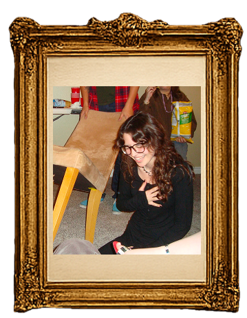
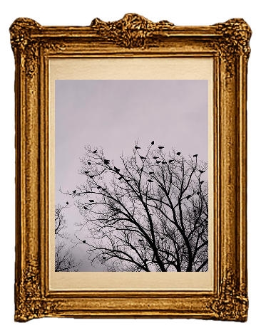
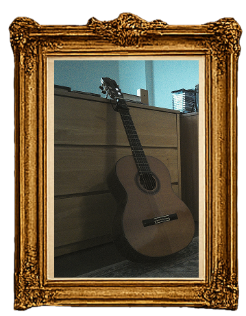
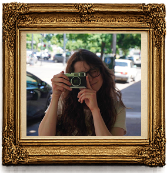
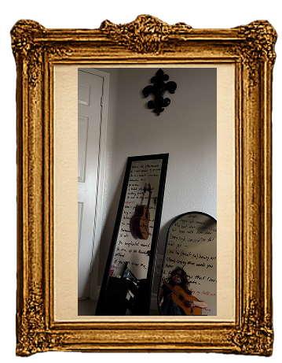
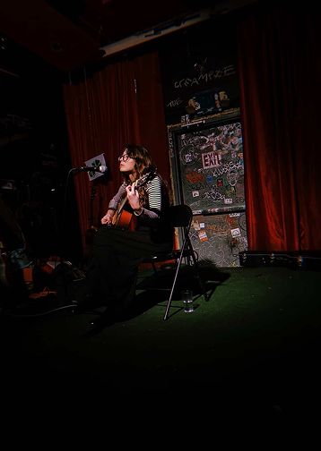

Mers
Songwriter
•
Composer
Lyricist
•
Producer

Songwriter
•
Composer
Lyricist
•
Producer

Mers is a songwriter, composer, lyricist, and creative producer whose work is rooted in storytelling, emotional authenticity, and artistic depth. Drawing from influences across genres, she blends evocative lyrics, expressive melodies, and thoughtful production into cohesive, narrative-driven experiences.
Whether writing intricate lyrics rich with imagery and layered meaning, composing music that highlights the capabilities of trained vocalists, or developing productions that expand intimate acoustic ideas into fully realized works, Mers approaches every stage of the creative process with a strong artistic vision. Her work is characterized by emotional resonance, literary sensibility, and a commitment to creating music that connects deeply with audiences while serving a larger story.
With experience spanning lyric writing, composition, and production, she specializes in bringing concepts to life from their earliest inspiration through their final artistic form.
Mers specializes in emotionally driven songwriting, blending vivid imagery, nuanced wordplay, and strong melodic phrasing to create memorable lyrics. Her work often incorporates layered meanings, literary influences, and cultural references, resulting in songs that reward repeated listening. Whether developing an original concept or building upon an existing demo, she excels at translating artistic vision into compelling lyrical narratives that enhance both the story and emotional core of a piece.
Mers is a composer and songwriter who writes primarily for piano and guitar, specializing in original indie and acoustic music. Her compositions are designed to showcase trained vocalists, featuring expressive melodies, dynamic vocal runs, and complex rhythms. Influenced by artists like Elliott Smith, her work blends technical sophistication with emotional authenticity, creating music that is both artistically compelling and deeply engaging. Whether crafting intimate acoustic arrangements or fully developed works, she excels at using music to support storytelling and elevate vocal performance.
Mers brings a strong creative vision to the production of her original work, guiding projects from initial concept through development. She has a particular passion for transforming acoustic compositions into more fully produced arrangements, using production techniques to deepen emotional resonance and broaden artistic scope. Her voice in production emphasizes storytelling, thematic cohesion, and character-driven narratives, with a focus on creating compelling through lines that support larger projects such as EPs and concept albums.
Mers specializes in emotionally driven songwriting, blending vivid imagery, nuanced wordplay, and strong melodic phrasing to create memorable lyrics. Her work often incorporates layered meanings, literary influences, and cultural references, resulting in songs that reward repeated listening. Whether developing an original concept or building upon an existing demo, she excels at translating artistic vision into compelling lyrical narratives that enhance both the story and emotional core of a piece.
Mers is a composer and songwriter who writes primarily for piano and guitar, specializing in original indie and acoustic music. Her compositions are designed to showcase trained vocalists, featuring expressive melodies, dynamic vocal runs, and complex rhythms. Influenced by artists like Elliott Smith, her work blends technical sophistication with emotional authenticity, creating music that is both artistically compelling and deeply engaging. Whether crafting intimate acoustic arrangements or fully developed works, she excels at using music to support storytelling and elevate vocal performance.
Mers brings a strong creative vision to the production of her original work, guiding projects from initial concept through development. She has a particular passion for transforming acoustic compositions into more fully produced arrangements, using production techniques to deepen emotional resonance and broaden artistic scope. Her voice in production emphasizes storytelling, thematic cohesion, and character-driven narratives, with a focus on creating compelling through lines that support larger projects such as EPs and concept albums.
Mers has experience with:













Mers' live appearance include:

Mers is available for select live performances, songwriting showcases, acoustic sets, and creative events. For booking inquiries, please reach out with event details, location, date, and any relevant performance needs.
Submit booking inquiries to:
musicbymers@gmail.com